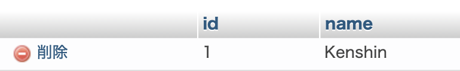

Hello!
・書き込むにはInsert文を使います。
・前回作成したplayersテーブルに書き込みます。
・まずMAMPを開いて、右上のスタートボタンを押します。

・前々回ほどに作成したhtdocsにあるcreate.phpを開いてください。
・まずは変数を書きます。
$format = "mysql:host=localhost; dbname=%s; charset=utf8";
$dsn = sprintf($format, 'football');
$username = "root";
$password = "root";
・formatの後にDB名のfootballを入力してください。
・usernameとpasswordはrootです。
・次にログインのコードを書きます。
try {
$dbh = new PDO($dsn, $username, $password);
echo 'YES';
} catch (PDOException $e) {
$msg = $e->getMessage();
echo $msg;
}
・トライで囲み、エラーをキャッチできるようにします。
・PDOクラスを使いログインします。
・echoで書き出すことによって成功しているかを確認できます。
・確認方法は、http://localhost/create.phpでできると思います。
・Insert文を書きます。
$sql = "INSERT INTO players (name) VALUES (:name)";
・INTOの後にテーブル名を書きます。
・最初の括弧で書き込み先のカラム名を書きます。
・最後の括弧は変数のようなものです。
・次に書き込みを行うコードを書きます。
$prepare = $dbh->prepare($sql);
$prepare->bindValue(':name', 'Kenshin', PDO::PARAM_STR);
$prepare->execute();
echo 'SUCCESS';
・二行目で先ほど指定した変数の後に、書き込みたい文字を入力します。
・三つ目の引数は文字のためSTRです。
・最後にechoで書き出すことによって成功しているかを確認できます。
・MAMPを見ると書き込まれていました。

・最後に私が作成したチャットで試してみたいと思います。
・文字を入力して隣の送信ボタンを押すと、

・書き込みされます。
この書き込んだ文字を表示させる方法を次回書いていきます。
その方法は こちら で載せています。
Fin.